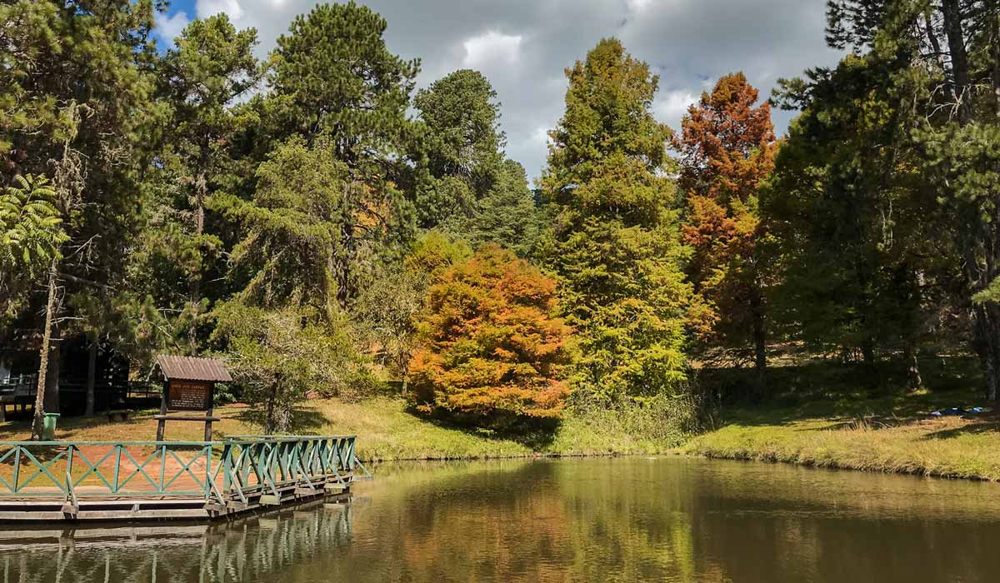

Hopi Hari

Hopi Hari é um parque temático brasileiro localizado no quilômetro 72 da Rodovia dos Bandeirantes, no município de Vinhedo, interior do estado de São Paulo. O parque está a 30 km de Campinas e 72 km de São Paulo.
Sobre o Hopi-HarRota do Vinho - São Roque
Para conhecer a Rota do Vinho em São Roque, não é necessário pagar uma taxa. De maneira que é possível visitar a região com um veículo. E percorrer a Estrada do Vinho, Estrada dos Venâncios e Rodovia Quintino de Lima. A partir de então, passe pelos 10km de extensão do roteiro. Esses que irão possibilitar degustações de vinhos, colheita de uvas, boa gastronomia e passeios memoráveis.
Sobre a Rota do VinhoHorto-Florestal
O parque possui uma rica representatividade de Mata Atlântica, algo raro na capital paulista, e possui áreas de lazer, lagos e bicas. Espécies exóticas de eucalipto podem ser vistas no Horto, assim como o pau-brasil. Entre animais a serem observados no Horto destacam-se tucanos, maritacas, esquilos e capivaras.
Sobre o Horto-Florestal- MIS - Museu da Imagem e do Som de São Paulo
- Exposição sobre Van Gogh
- Museu de Arte Moderna de São Paulo
- Pinacoteca de São Paulo
- Pavilhão Japonês
- Exposição sobre Tim Burton
- Solo Sagrado
- Museu Catavento cultural